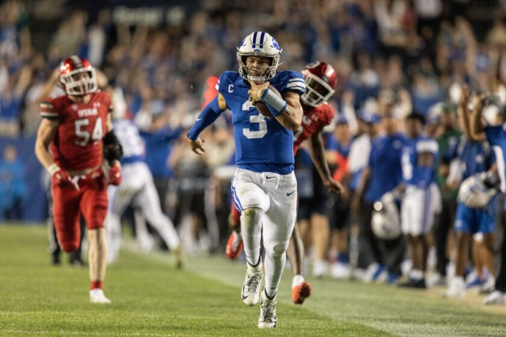
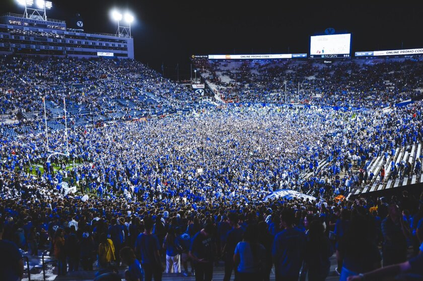

Rivalry History
The BYU vs Utah rivalry, also known as the "Holy War," began in 1896 and has been one of the most intense college football rivalries in the nation. Fans from both sides are deeply passionate, and the rivalry has a storied tradition.
Series Record
As of 2025, BYU and Utah have faced each other a total of 102 times. Utah leads the series with 62 wins, 36 losses, and 4 ties. However, in the past 50 years, since BYU and Utah have been roughly similar sized schools and had similar resources for football, the record is in BYU's favor with 26 wins to Utah's 21.
The most recent game that Utah played in Provo was on September 11, 2021. BYU won that game with a score of 26-17. Fans packed the stadium to witness this thrilling matchup and the game ended with the BYU student section storming the field to celebrate with the players. Here are a few pictures from that match up:
 The most recent football game between BYU and Utah occurred on November 9, 2024. BYU also came out on top of that game, with a last-second kick by Will Ferrin putting the Cougars on top with a score of 22-21. Here's a video recap of that matchup:
Interesting Facts About the Holy War
- Recent Matchups: The most recent game on November 9, 2024, ended with BYU winning 22–21.
- BYU secured the victory with a last-second field goal by Will Ferrin.
- The game concluded with controversy surrounding a holding call by the Utah defense.
- Conference Realignment: In 2024, both teams joined the Big 12 Conference, renewing their annual rivalry.
- The rivalry's renewal has added new significance within the conference.
- Beehive Boot Trophy: The winner of the game receives the Beehive Boot, a trophy symbolizing the rivalry.
- The boot represents the state of Utah and the fierce competition between the teams.
BYU vs Utah Game Stats
Below is a live Tableau visualization showing detailed data for all BYU vs Utah football games: